Team-review candidates: each clip uses the same 35-second Opera opening picture so the music can be judged in context. Cyreen 03 is the current Treatment 2 selection.
Treatment 1 · Dramatic television underscore · Adobe Firefly
YS-OP-020 · RGHOfficial field report · impossible evidence
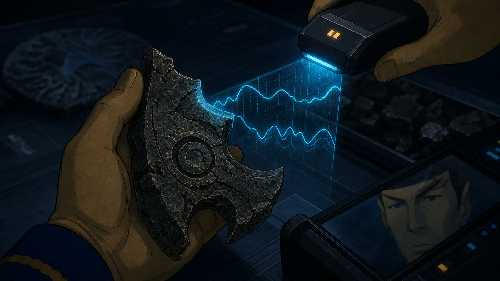
YS-OP-021 · RGHAncient material · aging backward
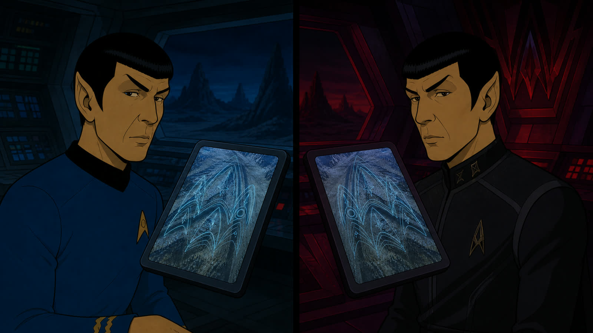
YS-OP-022 · RGHPrime / Mirror temporal echo
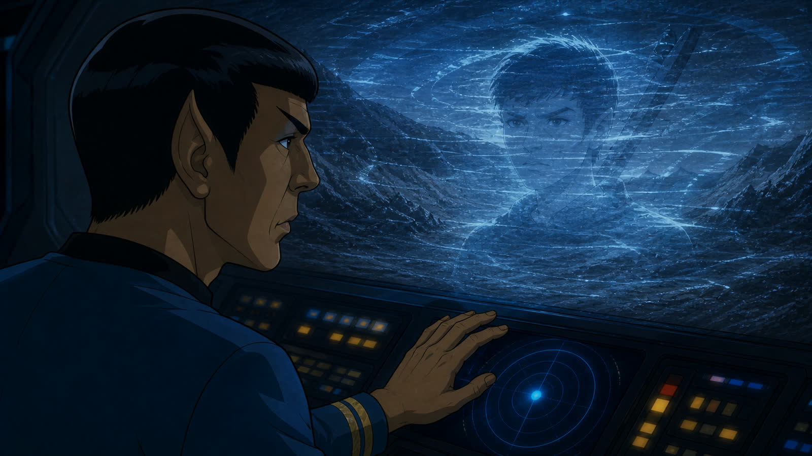
YS-OP-023 · RGHUnknown young Vulcan · first temporal trace
Alternative sequence · Non-canon roughs
ALT-A · History No Longer Knows Him
Archived alternative: preserved as a possible branch, dream, temporal displacement, or later multiverse variation. It is not the current main storyline.
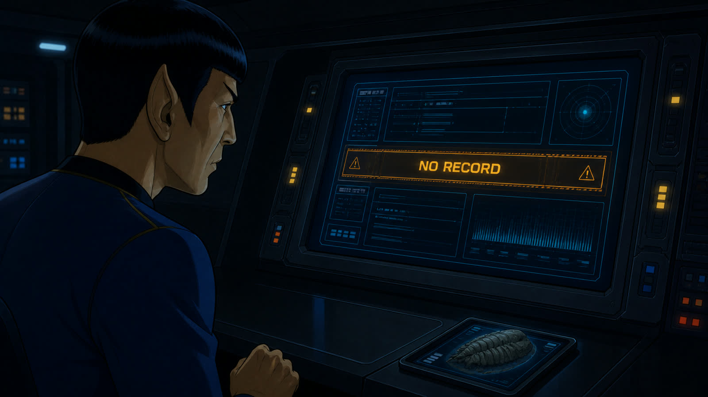
YS-OP-013 · RGHNo authorized mission record
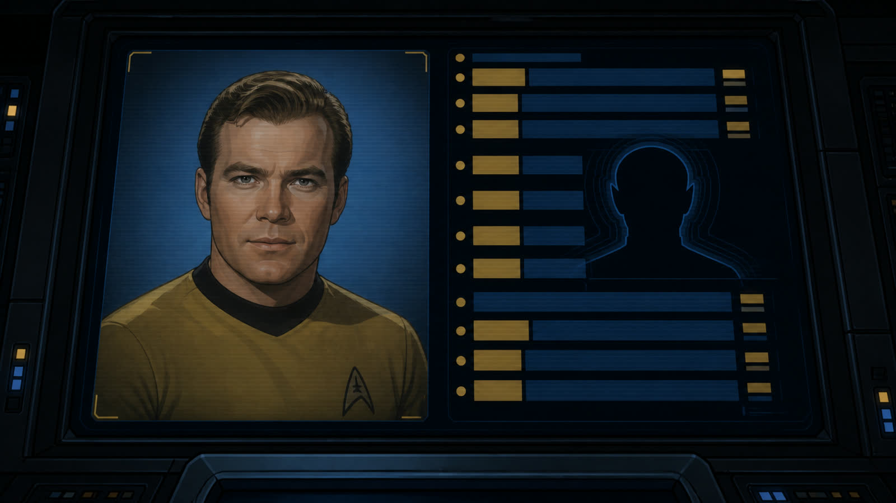
YS-OP-014 · RGHKirk’s history omits Spock
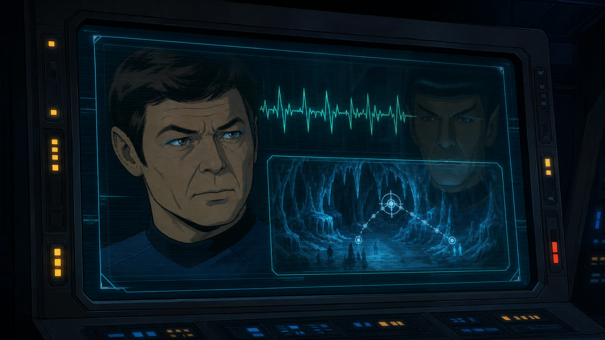
YS-OP-015 · RGHMcCoy remembers it differently
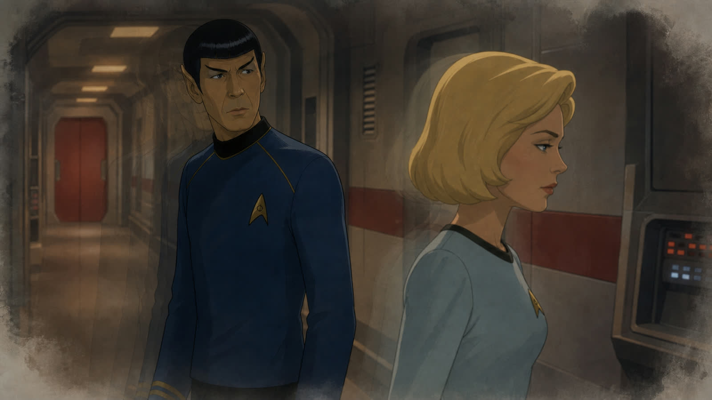
YS-OP-016 · RGHChapel passes without recognition
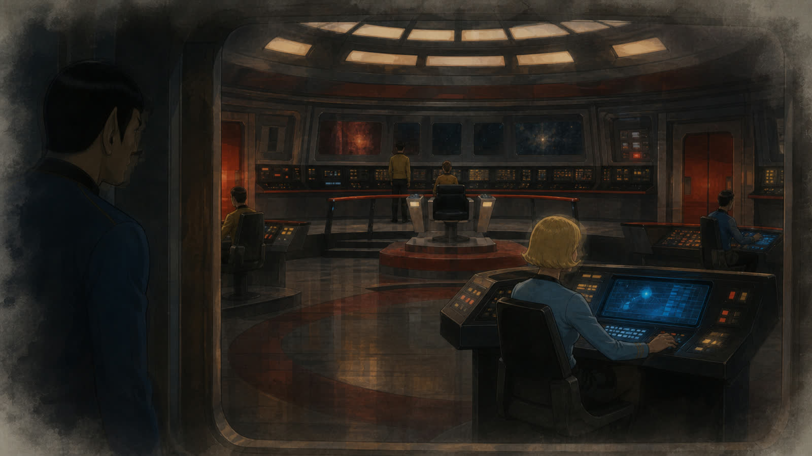
YS-OP-017 · RGHSomeone else occupies his station
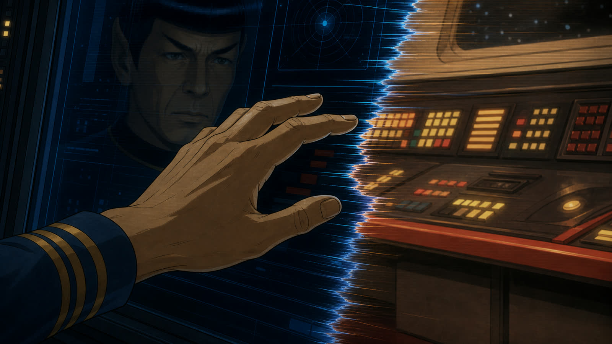
YS-OP-018 · RGHReality fractures before contact
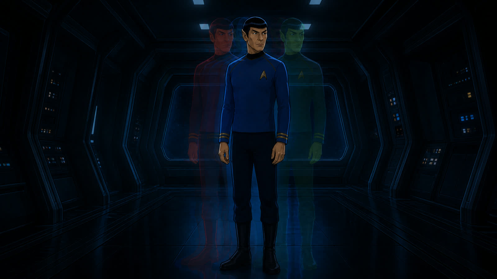
YS-OP-019 · RGHThree possibilities fail to align
Movements III–VII · Complete Rough Pass
Multiverse, Human Inheritance & Passage
Contact-sheet workflow: each image contains three consecutive storyboard panels, read left to right. The stable shot range is shown beneath each sheet.
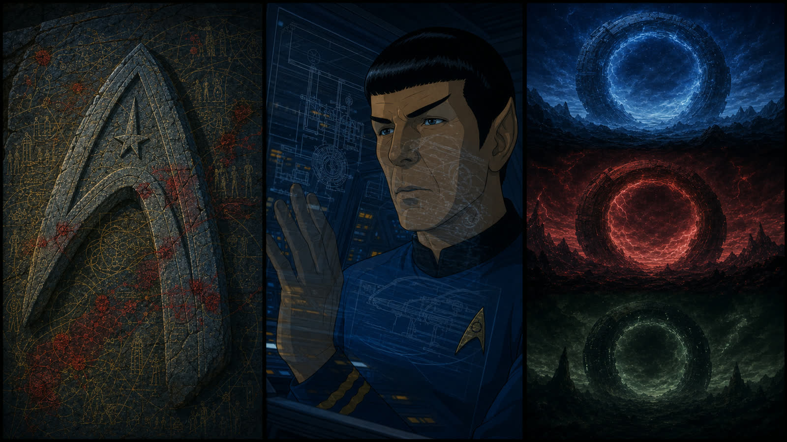
YS-OP-024–026 · RGHContamination map · impossible technology · three skies
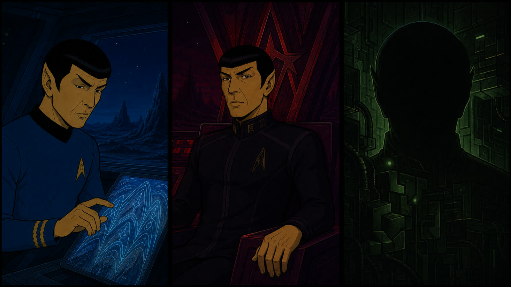
YS-OP-027–029 · RGHPrime · Mirror · concealed third Spock
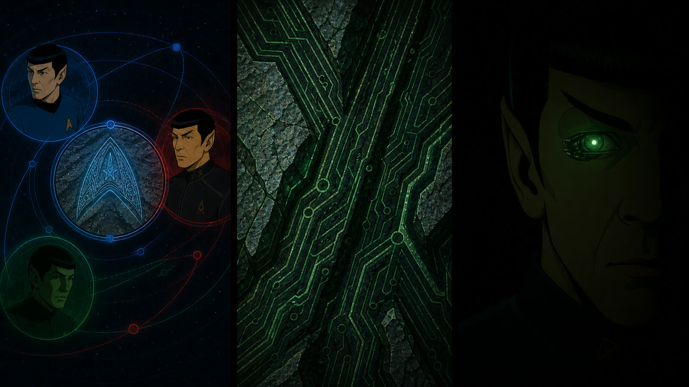
YS-OP-030–032 · RGHShared anomaly · circuitry · the eye
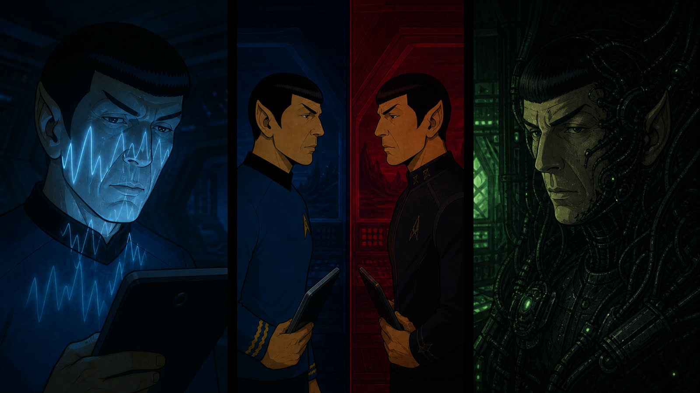
YS-OP-033–035 · RGHSynthetic voice · recognition · Borg Spock
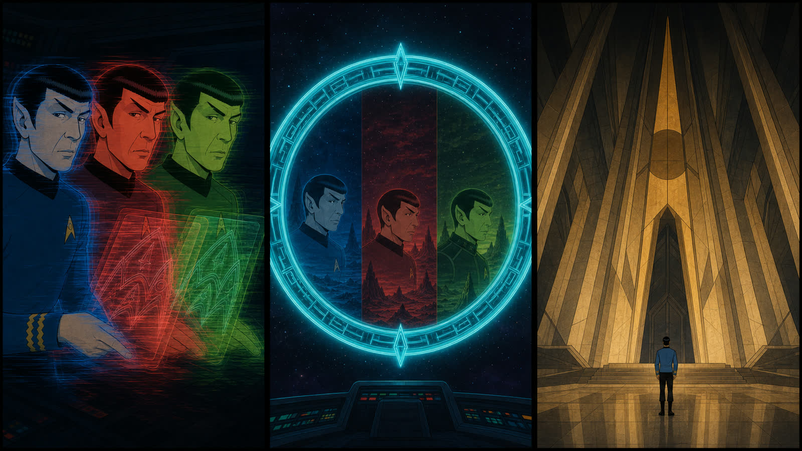
YS-OP-036–038 · RGHDesynchronization · Guardian · Vulcan order